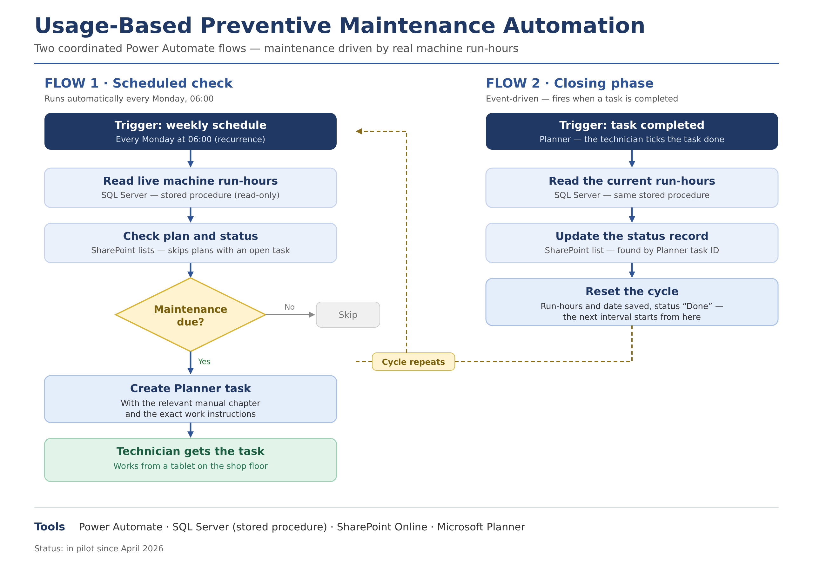
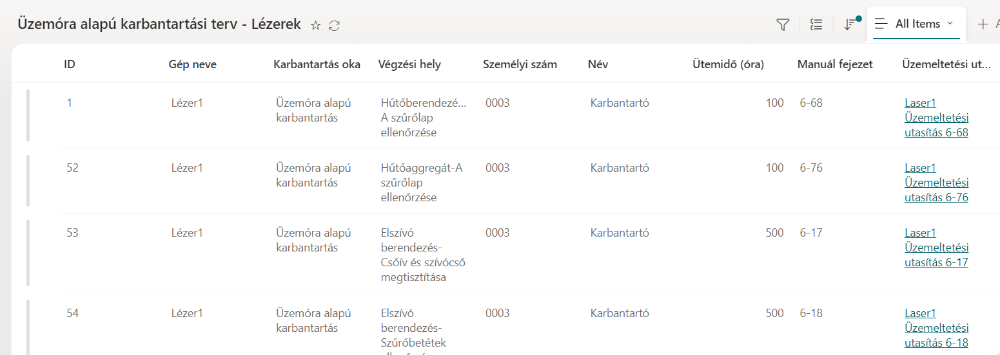
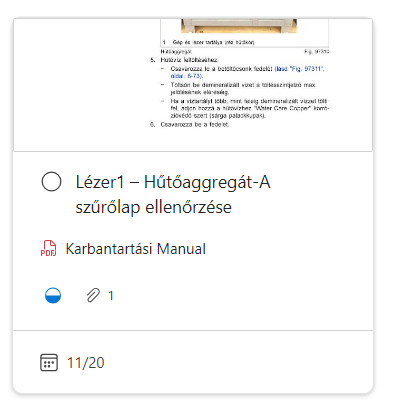
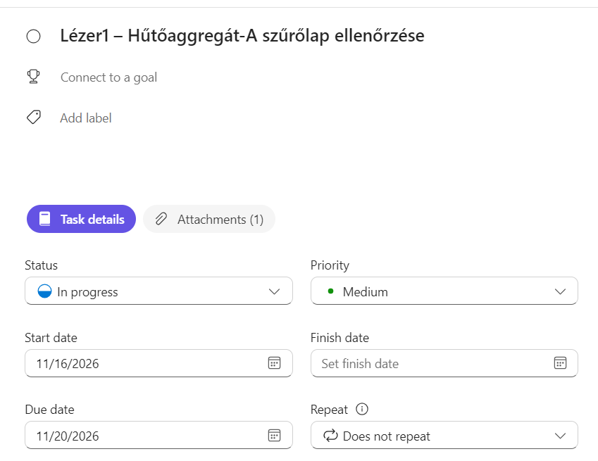

Usage-Based Preventive Machine Maintenance
I built two Power Automate flows that check the run-hours of every machine against its maintenance plan each week. When a maintenance is due, the technician gets a Planner task with the exact manual chapter. In pilot operation since April 2026.
01 · The problem
Maintenance plans lived partly in Excel and partly in the ERP. They were hard to maintain and had to be edited again every year, and technicians worked from paper maintenance books on the shop floor.
02 · The solution
I set up a SharePoint list with the maintenance plan of every machine: the task, the interval in run-hours and the manual chapter. Every Monday a Power Automate flow reads the run-hours from SQL Server and creates a Planner task for each maintenance that is due, with the exact manual chapter attached. When the technician completes it, a second flow saves the run-hours and the date, and the cycle starts again.

03 · In practice
One plan list, one task per maintenance.

Maintenance planOne row per task: machine, place, interval in run-hours, manual chapter and a link to the instruction
Planner cardDue date, status and the manual chapter on the card
Task detailsMachine, task, interval and the manual link in the notes04 · Flow 1: the weekly check
Every Monday at 06:00 a stored procedure returns the run-hours of each machine since its last maintenance. For every plan row the flow checks the status list. If a task is already open, nothing happens, so there are no duplicates. If not, and the run-hours have reached the interval in the plan, it creates a Planner task with the manual chapter attached.
04 · Flow 2: closing the loop
When the technician ticks the task done in Planner, the second flow reads the current run-hours, finds the matching row in the status list by task ID and saves the run-hours and the date. The next interval is counted from the real completion, not from the plan.
05 · Results so far
06 · Key decisions
- Run-hours from the source. One stored procedure reads the usage data; the flows never copy it by hand.
- Plan and status in separate lists. The plan changes rarely, the status changes with every maintenance.
- No duplicate tasks. The flow skips a plan row while its task is still open.
- Manuals split into chapters. Each plan row links to the exact manual pages, so the technician does not search a whole PDF.
- Planner for the shop floor. Tasks, due dates and completion in a tool the technicians can use on a tablet.